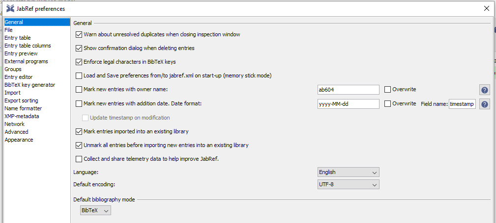
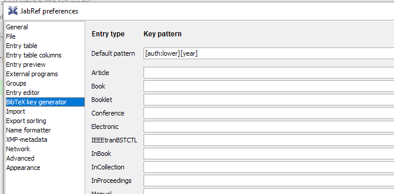
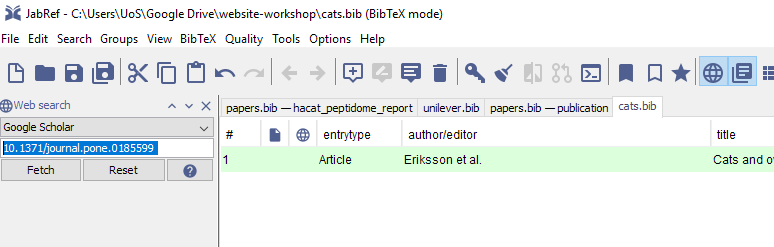
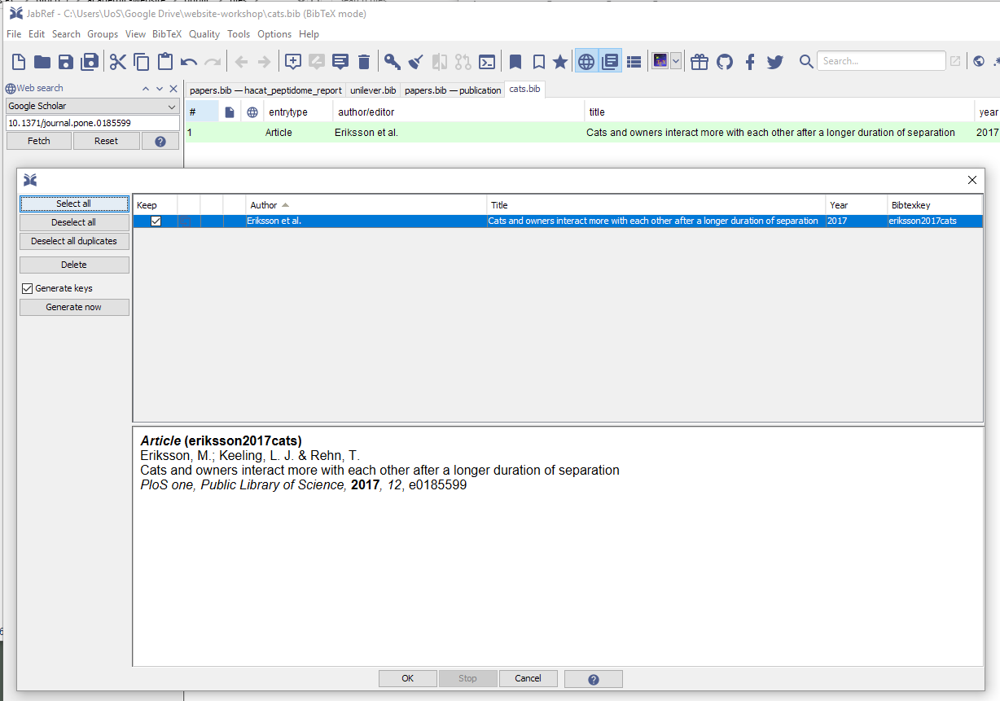

4 Creating publication files
This is probably the most fiddly part. In the content/publication folder we need .md files for each publication we want to add to our site.
Bibi being quite a lazy cat only has one publication, but we’ll look at how to automate the process for many.
4.1 Citation format
To add publication citations, we first need them in bibtex format. This can be done using JabRef.
- Open JabRef and go to
Options > Preferences > Generaland ensureDefault encodingis set toUTF-8

- Then go to
Options > Preferences > Bibtex key generatorand set this to[auth:lower][year]and thenOK.

Then create a library
File > New Bibtex Library.If you have exported your publications from EndNote or other software as bibtex you can import this into your new library and then highlight the list and click on the key icon to generate bibtex keys.
Alternatively, we can generate the list using the search function, here I entered a DOI and searched with Google Scholar:

Then I selected the publication and generated the key.

- Now we save the bibtex library. Here it is
cats.bib. It’s just another text file so can be viewed in any text editor.
4.2 Converting Bibtex files
Converting to markdown requires some effort, fortunately Lorenzo Buesetto wrote a function that required a small hack to work with JabRef.
I found the function still may output files that need a bit of cleaning up, but generally it works really well.
We need the tidyverse, RefManageR, anytime packages installed.
bibtex_2academic <- function(bibfile,
outfold,
abstract = FALSE,
overwrite = FALSE) {
require(RefManageR)
require(dplyr)
require(stringr)
require(anytime)
# Import the bibtex file and convert to data.frame
mypubs <-
ReadBib(bibfile, check = "warn",
.Encoding = "UTF-8") %>%
as.data.frame()
# assign "categories" to the different types of
# publications
mypubs <- mypubs %>%
dplyr::mutate(
pubtype = dplyr::case_when(
bibtype == "Article" ~ "2",
bibtype == "Article in Press" ~ "2",
bibtype == "InProceedings" ~ "1",
bibtype == "Proceedings" ~ "1",
bibtype == "Conference" ~ "1",
bibtype == "Conference Paper" ~ "1",
bibtype == "MastersThesis" ~ "3",
bibtype == "PhdThesis" ~ "3",
bibtype == "Manual" ~ "4",
bibtype == "TechReport" ~ "4",
bibtype == "Book" ~ "5",
bibtype == "InCollection" ~ "6",
bibtype == "InBook" ~ "6",
bibtype == "Misc" ~ "0",
TRUE ~ "0"
)
)
# create a function which populates the md template
# based on the info
# about a publication
create_md <- function(x) {
# define a date and create filename by appending date
# and start of title
if (!is.na(x[["year"]])) {
x[["date"]] <- paste0(x[["year"]], "-01-01")
} else {
x[["date"]] <- "2999-01-01"
}
filename <- paste(
x[["date"]],
x[["title"]] %>%
str_replace_all(fixed(" "), "_") %>%
str_remove_all(fixed(":")) %>%
str_sub(1, 20) %>%
paste0(".md"),
sep = "_"
)
# start writing
if (!file.exists(file.path(outfold, filename)) |
overwrite) {
fileConn <- file.path(outfold, filename)
write("+++", fileConn)
# Title and date
write(paste0("title = \"", x[["title"]], "\""),
fileConn,
append = T)
write(paste0("date = \"", anydate(x[["date"]]), "\""),
fileConn,
append = T)
# Authors. Comma separated list, e.g. `["Bob Smith",
# "David Jones"]`.
auth_hugo <-
str_replace_all(x["author"], " and ", "\", \"")
auth_hugo <-
stringi::stri_trans_general(auth_hugo, "latin-ascii")
write(paste0("authors = [\"", auth_hugo, "\"]"),
fileConn,
append = T)
# Publication type. Legend:
# 0 = Uncategorized, 1 = Conference paper,
# 2 = Journal article
# 3 = Manuscript, 4 = Report, 5 = Book, 6 = Book
# section
write(paste0("publication_types = [\"", x[["pubtype"]],
"\"]"),
fileConn,
append = T)
# Publication details: journal, volume, issue,
# page numbers and doi link
publication <- x[["journal"]]
if (!is.na(x[["volume"]]))
publication <- paste0(publication,
", (", x[["volume"]], ")")
if (!is.na(x[["pages"]]))
publication <- paste0(publication,
", _pp. ", x[["pages"]], "_")
if (!is.na(x[["doi"]]))
publication <- paste0(publication,
", ",
paste0("https://doi.org/",
x[["doi"]]))
write(paste0("publication = \"", publication, "\""),
fileConn,
append = T)
write(paste0("publication_short = \"",
publication,
"\""),
fileConn,
append = T)
# Abstract and optional shortened version.
if (abstract) {
write(paste0("abstract = \"", x[["abstract"]], "\""),
fileConn,
append = T)
} else {
write("abstract = \"\"",
fileConn,
append = T)
}
write(paste0("abstract_short = \"", "\""),
fileConn,
append = T)
# other possible fields are kept empty. They can be
# customized later by
# editing the created md
write("image_preview = \"\"",
fileConn,
append = T)
write("selected = false", fileConn, append = T)
write("projects = []", fileConn, append = T)
write("tags = []", fileConn, append = T)
#links
write("url_pdf = \"\"", fileConn, append = T)
write("url_preprint = \"\"",
fileConn,
append = T)
write("url_code = \"\"", fileConn, append = T)
write("url_dataset = \"\"",
fileConn,
append = T)
write("url_project = \"\"",
fileConn,
append = T)
write("url_slides = \"\"", fileConn, append = T)
write("url_video = \"\"", fileConn, append = T)
write("url_poster = \"\"", fileConn, append = T)
write("url_source = \"\"", fileConn, append = T)
#other stuff
write("math = true", fileConn, append = T)
write("highlight = true", fileConn, append = T)
# Featured image
write("[header]", fileConn, append = T)
write("image = \"\"", fileConn, append = T)
write("caption = \"\"", fileConn, append = T)
write("+++", fileConn, append = T)
}
}
# apply the "create_md" function over the
# publications list to generate
# the different "md" files.
apply(
mypubs,
FUN = function(x)
create_md(x),
MARGIN = 1
)
}To use this function, save it as bibtex_2academic.R and then load the fcuntion into your R environment using source("bibtex_2academic.R").
Then assuming you have a JabRef outputted Bixbtex file, here cats.bib we need to assign variables for the bibtex file and the output location, which in this case will be content/publication. Then we use these variables as arguement to the conversion function:
# Bibtex file in my directory
my_bibfile <- "cats.bib"
# Where I want the markdown output to go
outfold <- "content/publication"
# Use the conversion function
bibtex_2academic <- function(my_bibfile,
outfold,
abstract = FALSE,
overwrite = FALSE
)All being well, we should now have a markdown file for each publication (we only had one in this example) in the content/publication. It may need some manual tweaking if the format on the webpage isn’t quite right.
We can remove the example files that came with the template.
Bibi should now have her website configured and what’s left is to re-deploy the completed version which should look like this: